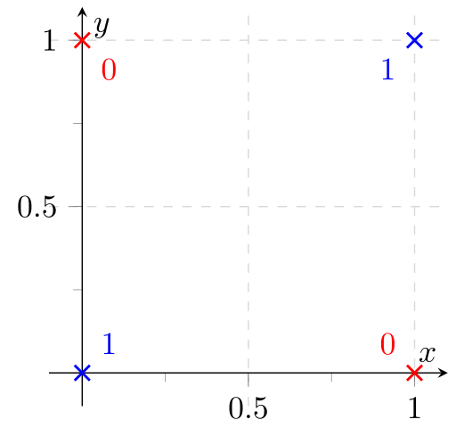

XOR is a simple bit-wise defined function:
\begin{align} \text{XOR}:& {0, 1} \times {0, 1} \rightarrow {0, 1}\ \text{XOR}(a, b) :&= \begin{cases}0 &\text{if } a= b\1&\text{otherwise}\end{cases} \end{align}
To make it more convenient, we define $a \oplus b := \text{XOR}(a, b)$.
If $a$ and $b$ have multiple bits, just align the bits and apply it point-wise to every index.
This simple function is applicable in many contexts. In Python, you compute a
bit-wise XOR(a, b) with a ^ b.
Multi-Bit Example
Just look at each column:
a = 0011
b = 0110
XOR(a, b) = 0101
Simple Tasks
There are some simple coding competition tasks where you can apply this trick.
Leetcode 136
Given a non-empty array of integers, every element appears twice except for one. Find that single one.
See Leetcode.com
Here is a straightforward solution to that problem using no additional space and running in $\mathcal{O}(n)$:
from typing import List
def find_outlier(nums: List[int]) -> int:
for num in nums[1:]:
nums[0] = num ^ nums[0]
return nums[0]
Pretty cool, isn't it?
Missing Number
Given is an array of (n-1) numbers. Each number is in 1, ..., n and unique. This means you have all numbers from 1 to n, but one is missing and the array is not necessarily sorted. Find the missing number.
This is also a leetcode problem. Leetcode-287 is not exactly the same, but super close. Solvable by the same trick. However, the problem description is wrong 😕
A bit harder, but Leetcode-645 also uses the XOR-trick.
The straightforward solution with the XOR-trick is:
from typing import List
def find_missing(nums: List[int]) -> int:
# Prepare
missing = 0
for i in range(1, len(nums) + 2): # the numbers 1, ..., n with n = len(nums) + 1
missing ^= i
# Run
for num in nums:
missing ^= num
return missing
This already has the optimal space complexity of $\mathcal{O}(1)$ and the optimal time complexity of $\mathcal{O}(n)$. However, I don't like that the prepare-block is in $\mathcal{O}(n)$.
Let's call the XOR of the numbers 1 to n, ALL_XOR(n):
$$\text{ALL_XOR}(n) := \begin{cases}0 &\text{if } n =0\\text{XOR}(n , \text{ALL_XOR(n-1)}) &\text{otherwise}\end{cases}$$
The XOR of 1 to n for some numbers can be seen here:
| n | $\text{ALL\_XOR}(n)$ | n % 4 |
|---|---|---|
| 0 | 0 | 0 |
| 1 | 1 | 1 |
| 2 | 3 | 2 |
| 3 | 0 | 3 |
| 4 | 4 | 0 |
| 5 | 1 | 1 |
| 6 | 7 | 2 |
| 7 | 0 | 3 |
| 8 | 8 | 0 |
| 9 | 1 | 1 |
| 10 | 11 | 2 |
Hypothesis 1: If n % 4 == 0, then $\text{ALL_XOR}(n) = n$
A proof by induction follows:
Base Case (BC): For $n = 0$ we have $n$ % 4 == 0 and $\text{ALL_XOR}(n) = n = 0$.
Induction step: For $n + 4$, we have:
\begin{align} \text{ALL_XOR}(n + 4) &= \text{ALL_XOR}(n) \oplus (n+1) \oplus (n+2) \oplus (n+3) \oplus (n+4)\ &\stackrel{(IH)}{=} n \oplus (n+1) \oplus (n+2) \oplus (n+3) \oplus (n+4)\ &\stackrel{(R)}{=} n \oplus (n \oplus 1) \oplus (n \oplus 2) \oplus (n \oplus 3) \oplus (n + 4)\ &\stackrel{(A + K)}{=} (n \oplus n) \oplus 1 \oplus 2 \oplus (n \oplus n) \oplus 3 \oplus (n + 4)\ &= 3 \oplus 3 \oplus (n + 4)\ &= n + 4 \end{align}
A few steps to explain:
- R: If you look at $n$ in binary, the last two digits are zero as n % 4 == 0. This means that $n+1 = n \oplus 1$.
- IH: The induction hypothesis (the statement holds for $n$)
- A + K: Associativity and commutativity; I didn't prove it, but it is pretty clear from the definition
Hypothesis 2: If n % 4 == 1, then $\text{ALL_XOR}(n) = 1$
This follows directly from Hypothesis 1: As $n$ % 4 == 1, we know that $n - 1$ % 4 == 0 and hence $\text{ALL_XOR}(n-1) = n-1$. The last two bits of $n-1$ are zero, so $n = (n-1) \oplus 1$. Therefore:
\begin{align} \text{ALL_XOR}(n) &= \text{ALL_XOR}(n-1) \oplus n\ &= (n-1) \oplus ((n-1) \oplus 1)\ &= 1 \end{align}
Hypothesis 3: If n % 4 == 2, then $\text{ALL_XOR}(n) = n+1$
All good things come in threes!
Base Case (BC): For $n = 2$ we have $n$ % 4 == 2 and $\text{ALL_XOR}(n) = 0 \oplus 1 \oplus 2 = 3$.
Induction step: For $n + 4$, we have:
\begin{align} \text{ALL_XOR}(n + 4) &= \text{ALL_XOR}(n) \oplus (n+1) \oplus (n+2) \oplus (n+3) \oplus (n+4)\ &\stackrel{(IH)}{=} (n+1) \oplus (n + 1) \oplus (n + 2) \oplus (n + 3) \oplus (n+4)\ &= (n + 2) \oplus (n + 3) \oplus (n+4)\ &\stackrel{(R)}{=} (n + 3) \oplus 2\ &= n + 1 \end{align}
Hypothesis 4: If n % 4 == 3, then $\text{ALL_XOR}(n) = 0$
Base Case (BC): For $n = 3$ we have $n$ % 4 == 3 and $\text{ALL_XOR}(n) = 0 \oplus 1 \oplus 2 \oplus 3 = 0$.
Induction step: For $n + 4$, we have:
\begin{align} \text{ALL_XOR}(n + 4) &= \text{ALL_XOR}(n) \oplus (n+1) \oplus (n+2) \oplus (n+3) \oplus (n+4)\ &\stackrel{(IH)}{=} (n + 1) \oplus (n + 2) \oplus (n + 3) \oplus (n+4)\ &\stackrel{(R)}{=} 1 \oplus (n+3) \oplus(n+4)\ &\stackrel{(R)}{=} (n+4)\oplus(n+4)\ &= 0 \end{align}
This means there is a faster solution!
from typing import List
def find_missing(nums: List[int]) -> int:
# Prepare
n = len(nums) + 1 # the numbers are 1, ..., n
if n % 4 == 0:
missing = n
elif n % 4 == 1:
missing = 1
elif n % 4 == 2:
missing = n + 1
else: # n % 4 == 3
missing = 0
# Run
for num in nums:
missing ^= num
return missing
Fault Tolerance
In order to be fault-tolerant, one can calculate the XOR. Please note that this is the same idea as in both toy questions from above. The parity drive in RAID 3 uses this.
XOR Problem
In the context of Machine Learning there is something called the "XOR Problem". The XOR-Problem is a classification problem where you only have four data points with two features. The training set and the test set are exactly the same in this problem. So the interesting question is only if the model is able to find a decision boundary which classifies all four points correctly:
{kind=link}
